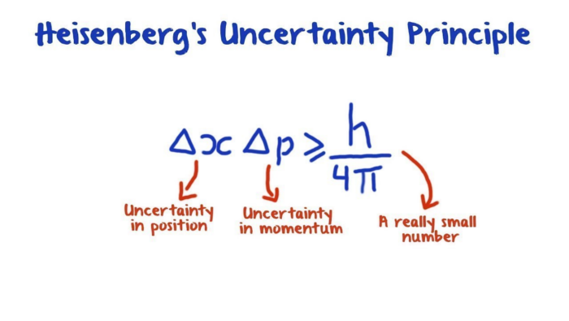

por Juan Camilo Arboleda Rivera
Aquí está el hilo que les prometí sobre la teoría del caos, está un poco largo pero espero que les guste tanto leerlo como a mí me gustó escribirlo.
Antes de hablar sobre la teoría del caos, vamos a hablar un poco sobre cómo ha evolucionado el pensamiento científico.
Puede decirse que el método científico tal y como lo conocemos hoy en día empezó a tomar fuerza desde los trabajos de Galileo Galilei, él insistió mucho en que para conocer el mundo era necesario observar los fenómenos y sobre todo cuantificarlos, por eso dijo:
Basados en estas ideas, muchos personajes de la época y posteriores empezaron a hacer grandes avances científicos. Por ejemplo, las leyes de Newton explicaron montones de fenómenos, y lo más importante: lograron poder predecir el comportamiento de la naturaleza usando el lenguaje de las matemáticas.
Estos increíbles logros llevaron a muchos científicos a pensar que estábamos en la capacidad de descubrir y predecir todo el comportamiento del mundo natural. Nació así el determinismo, el pensamiento de que todo el comportamiento del universo y su evolución está determinado por leyes y por el estado del sistema en un momento dado. El pensamiento determinista lo vemos ejemplificado en el demonio de Laplace.
Laplace, el gran físico, astrónomo y matemático, dijo alrededor de 1814 que si existiera una inteligencia que conociera la posición y la velocidad y masa de cada partícula del universo, esa entidad podría usar las leyes de la mecánica clásica para predecir todo el desarrollo futuro del universo.
Este hermoso sueño de Laplace y muchos otros científicos de poder predecirlo todo con certeza usando ecuaciones fue tristemente derribado al estudiar más a fondo la misma naturaleza. Uno de los duros golpes al determinismo fue la teoría cuántica, que dice que a una escala muy muy muy pequeña las cosas que componen el universo (la luz, los átomos, etc.) se comportan de manera probabilística y no podemos determinar con certeza ni siquiera su posición, velocidad y masa al mismo tiempo (lo que se conoce como el principio de incertidumbre de Heisenberg).
Pero la teoría cuántica es otro cuento para otro hilo. Hoy vinimos a hablar sobre el Caos y ya casi llegamos allí, pues la teoría del Caos fue otro de esos duros golpes al determinismo.
Edward Lorenz fue un matemático y meteorólogo que por allá en los 60 se puso a estudiar cómo se comportaba el clima usando modelos matemáticos que incluían la temperatura, la velocidad del aire y cosas así.
Su modelo consistía en ecuaciones diferenciales, y para resolverlas estaba usando un computador de esos mamotretos antiguos de los 60. Hizo una simulación de su sistema registrando los valores de las variables y todo bien, todo bonito.
Pero luego quizo repetir su análisis y para ahorrar algo de tiempo no puso al computador a calcular todo desde el principio sino desde la mitad, indicándole los valores de las variables. Seguro habrán escuchado que la matemática es una ciencia exacta y que si utilizas los mismos valores de las cosas y no tienes nada de aleatorio por ahí tienes que obtener los mismos resultados. Pues qué sorpresa se debe haber llevado Lorenz porque en su segundo análisis obtuvo valores completamente diferentes a los de antes. Analizando de nuevo qué era lo que había pasado se dio cuenta de que el computador hacía los cálculos con 6 dígitos de precisión, pero los valores que él ingresaba estaban redondeados a 3 dígitos, entonces por ejemplo el computador calculaba que el valor de una variable era 0.271828 pero al mostrarlo lo redondeaba a 0.272, no es mucha diferencia, ¿no?
Pues Lorenz descubrió que esas pequeñas diferencias eran las que causaban que los valores de las variables fueran absolutamente diferentes entre la primera simulación y la segunda, Lorenz había descubierto el Caos. El siguiente es un sistema de ecuaciones diferenciales caótico, es una simplificación del sistema original de Lorenz.
En la siguiente imagen vemos dos simulaciones del sistema anterior, la primera simulación en rojo y la segunda en azul, aquí mostramos cómo cambia el valor de la misma variable en el tiempo, solo que la primera vez la variable empezó en 5.88 y la otra en 5.89.
Miren cómo después de un tiempo los valores se vuelven completamente diferentes, ¡uno incluso es negativo cuando el otro es positivo!
¿Y entonces qué implicó esto para el determinismo? Implica que incluso aunque uno esté estudiando un sistema del que conozca muy bien sus leyes (por ejemplo las ecuaciones diferenciales de la evolución de su comportamiento), si este sistema es caótico, tendrías que conocer el estado del sistema CON INFINITA PRECISIÓN, para poder hacer predicciones a largo plazo.
El problema, como ya les había contado con el principio de incertidumbre de Heisenberg, es que en la vida real no podemos medir nada con infinita precisión por más que lo deseemos (lo se, esto es demasiado triste y a mí también me hace llorar en las noches). Así que hay sistemas deterministas, que no tienen nada de aleatorio, pero que aun así no podemos predecir cómo será su evolución.
La teoría del Caos ha inspirado a la ciencia ficción, tal vez algunos recuerden a Ian Malcolm hablando de ello en Jurassic Park, y seguro han escuchado por ahí sobre el efecto mariposa o han visto el episodio de los Simpsons donde Homero va al pasado y mata un mosquito.

Pues resulta que muchos creemos que el universo es un sistema caótico, y que cualquier mínima perturbación, por ejemplo el aleteo de una mariposa, puede terminar desencadenando un huracán que no hubiera existido en un universo paralelo donde la mariposa no existiera.
Lo bello es que si uno grafica las 3 variables del sistema de Lorenz y su evolución en el tiempo esto se parece a... sí señores, ¡una mariposa! (bueno, usando un poco la imaginación).

Desde un punto de vista más personal, para mí la teoría del Caos significa también que cada ser humano puede cambiar el mundo, porque todas nuestras acciones, por pequeñas que sean, en un universo caótico como el nuestro, pueden tener inmensas consecuencias.
Volver arriba